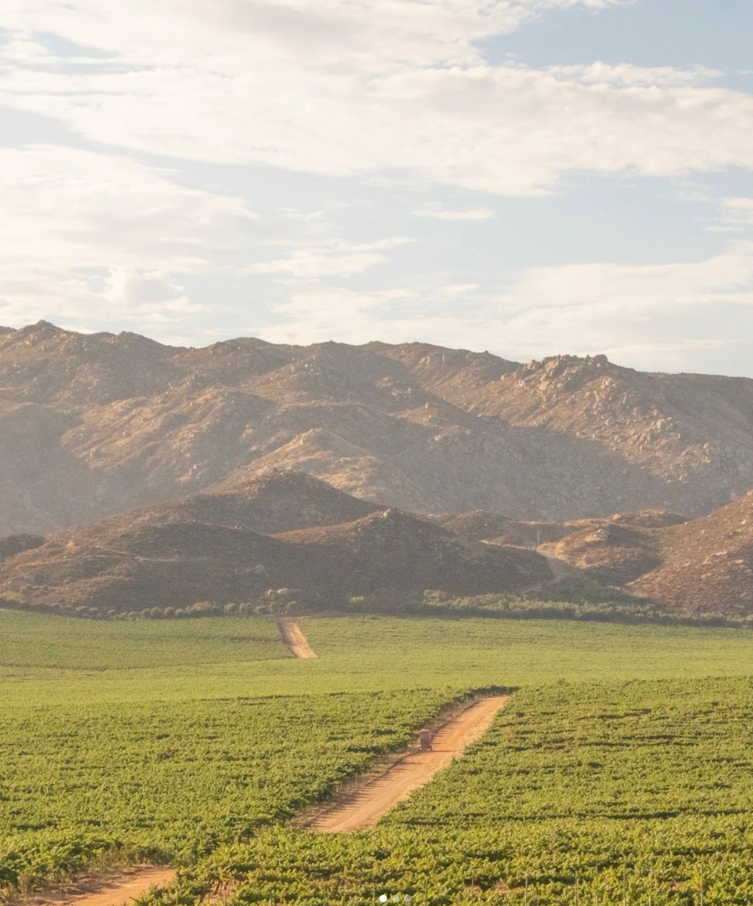
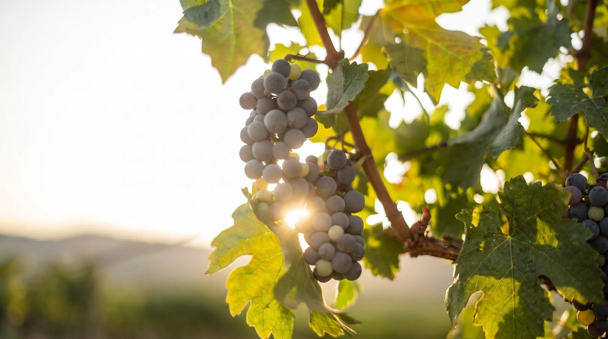

De México
para el mundo
Desde el Valle de Guadalupe, nuestros vinos han cruzado fronteras y han llevado una expresión de México a distintos mercados alrededor del mundo.
Fiesta de Colores
Una de nuestras celebraciones más grandes. Una vez más la vivimos junto a clientes y amigos de la casa: la uva recién cosechada, una gran comida bajo la carpa y concierto al caer la noche.
Celebra rodeado de viñedos en el Valle de Guadalupe: cumpleaños, aniversarios, bodas o reuniones corporativas. En la Ciudad de México, la Boutique L.A. Cetto en Lomas de Chapultepec recibe catas, cursos y eventos.
Organiza tu eventoCasi un siglo creciendo.
De una bodega fundada por un inmigrante de Trento a una de las vinícolas más premiadas de México, con la séptima generación al frente.
- 1928
Nace L.A. Cetto
Ángelo Cetto funda la bodega en Baja California con el conocimiento de la vitivinicultura de Trento.
- 1951
El Valle de Guadalupe
Don Luis Agustín expande los viñedos en el Valle y experimenta con variedades, suelos, climas y formas de plantación.
- 1983
Los primeros mercados del mundo
Luis Alberto Cetto lleva la marca a mercados internacionales: llega a 17 países. Ese año nace el Chenin Blanc, hoy un favorito del paladar francés.
- 2014
Bodega Mexicana del Año
El New York International Competition la distingue como Bodega Mexicana del Año. Desde entonces lo ha hecho nueve veces más.
- 2019
La séptima generación
La generación más reciente de la familia se incorpora e impulsa la innovación en la producción y en la comercialización.
- Hoy
Más de mil reconocimientos
1,089 reconocimientos internacionales, 1,200 hectáreas en el Valle de Guadalupe, 90 de ellas orgánicas certificadas, y vinos en más de 20 países.
Del viñedo a la copa.
Cada botella empieza en el Valle de Guadalupe y termina en la cava, con el cuidado de una familia que hace vino desde hace casi un siglo.

01El viñedo
1,200 hectáreas en el Valle de Guadalupe, 90 de ellas orgánicas certificadas, con 26 varietales.

02La vendimia
La uva se corta en su punto y llega a la bodega el mismo día para conservar su fruta y su frescura.
 03
03La barrica
Los tintos de guarda reposan en barrica de roble: 14 meses el Nebbiolo Reserva Privada, 12 el Concordia Don Luis.
 04
04La cava
Las botellas terminan de evolucionar en la cava antes de salir a México y a más de 20 países.
Hemos superado las 1,000 medallas internacionales: un logro que consolida a L.A. Cetto como una vinícola mexicana referente en el mundo.
10 veces Bodega Mexicana del Año
New York International Competition- 2014
- 2015
- 2016
- 2017
- 2018
- 2020
- 2021
- 2023
- 2025
- 2026
 Colección PremiadaLos vinos más reconocidos de la familiaVer la colección
Colección PremiadaLos vinos más reconocidos de la familiaVer la colección